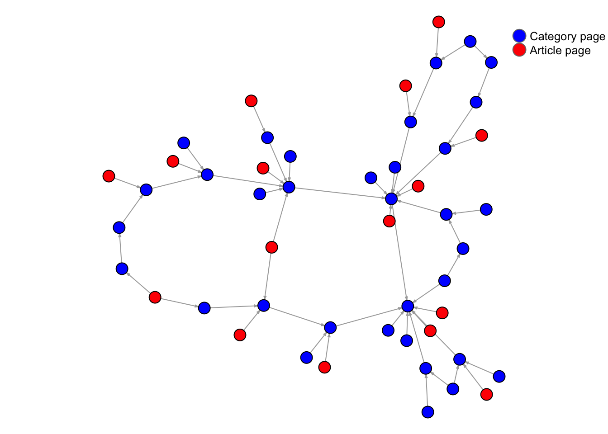
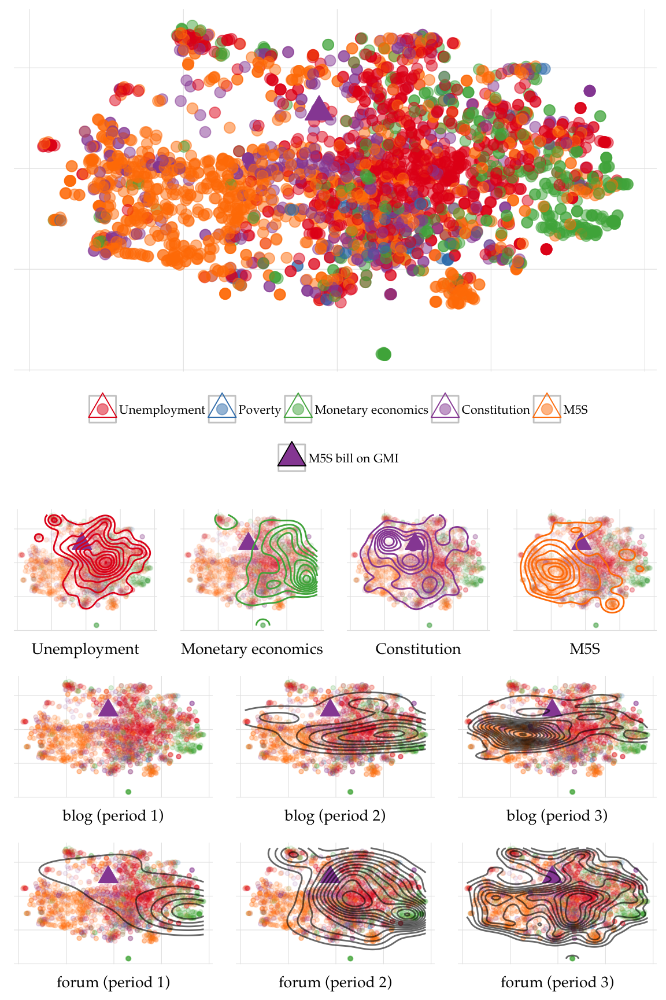

Explicit semantic analysis (ESA) was proposed by Gabrilovich and Markovitch (2007) to compute a document position in a high-dimensional concept space. At the core, the technique compares the terms of the input document with the terms of documents describing the concepts estimating the relatedness of the document to each concept. In spatial terms if I know the relative distance of the input document from meaningful concepts (e.g. ‘car’, ‘Leonardo da Vinci’, ‘poverty’, ‘electricity’), I can infer the meaning of the document relatively to explicitly defined concepts because of the document’s position in the concept space.
Wikipedia provides the concept space. Each article is a concept: then, en.wikipedia.org/wiki/Car for ‘car’, en.wikipedia.org/wiki/Leonardo_da_Vinci for ‘Leonardo da Vinci’, en.wikipedia.org/wiki/Poverty for ‘poverty’ and en.wikipedia.org/wiki/Electricity for ‘electricity’. The
For each input document \(D\), the analysis results in a vector of weights of length \(N\) — where \(N\) is the number of concepts \(c\) from the concept space — so to describe with a scalar value the strength of the association between the document \(D\) and concept \(c_j\) for \(c_j \in c_1, . . ., c_N\).
The Wikipedia content that we will download needs to be stored in a relational database. MySQL is the main back-end database management system for Wikipedia and is then a natural choice to store the content from the site. The database will seize, depending of the versions, few gigabytes of disk space. It is then necessary to make sure that the there is enough storage available in MySQL data directory (you can refer to this answer to change your MySQL data directory). Assuming now that MySQL is already installed and running on our machine we can create a database called wikipedia from the shell with
echo "CREATE DATABASE wikipedia" | mysql -u username -pand then run this script (Jarosciak 2013) to initialise the different tables with
mysql -u username -p wikipedia < initialise_wikipedia_database.sqlThis will create an empty database populated by all the tables required to store a Wikipedia site (or more precisely all the tables required by MediaWiki the open source software powering all the sites of the Wikimedia galaxy). For a description of the tables see here and for the diagram of the database schema here. Once the database is set-up we can proceed to download and import the data.
Wikimedia, the not-for-profit foundation running Wikipedia, conveniently provide the the data dumps of the different language versions of Wikipedia at dumps.wikimedia.org/backup-index.html. Since the data dumps can reach considerably sizes, the repository provides different data packages.
Here I will use data dumps of the Italian version of Wikipedia (to download the English version simply replace it with en) as of February 3, 2016 (20160203).
In order to build our concept map we will start by downloading the corpus of all the pages of the Italian version of Wikipedia which are contained in the file itwiki-20160203-pages-articles.xml. Once imported in the wikipedia database the XML file will fill three tables: the text table, where the body of the articles is actually contained, the page table with the metadata for all pages and the revision table that allows to associate each text to a page through the SQL relations revision.rev_text_id=text.old_id and revision.rev_page=page.page_id. Additionally we will need to download two other data dumps: itwiki-20160203-pagelinks.sql and itwiki-20160203-categorylinks.sql, which will fill respectively the pagelinks table and the categorylinks table. The pagelinks table details all internal links connecting different pages, which we will use this information to estimate the network relevance of each page), and the categorylink table describes the categories which each page belongs to.
The three data dumps that we downloaded are in two different formats: SQL and XML. The SQL files are ready to be imported into the database with the following commands
mysql -u username -p wikipedia < itwiki-20160203-pagelinks.sql
mysql -u username -p wikipedia < itwiki-20160203-categorylinks.sqlThe XML file we instead require some preprocessing. There are different tools that can assist you in importing a Wikipedia XML data dumps into a relational database. For convenience we use MWDumper. The following command will pipe the content of the XML file directly into the wikipedia database:
java -jar mwdumper.jar --format=sql:1.5 itwiki-20160203-pages-articles.xml | mysql -u username -p wikipediaMWDumper can also automatically take care of compressed dump files (such as itwiki-20160203-pages-articles.xml.bz2). The process of importing the XML data dump can take few hours. It is then advisable if launched on a remote machine to use a virtual console such as tmux to avoid problems if the connection with the remote machine is interrupted.
We then have a MySQL database wikipedia with information of all current pages, their internal links and the categories.
In my case I was interested in limiting my concept map to few thousands concepts of instead of hundred thousands of concepts (or more than 5 million in the case of the English version of Wikipedia) which would have resulted in processing all the articles contained in the data dump. I then create a map hierarchical map of categories constructed as a directed network with categories as nodes and links defined by the relation subcategory of. In the map I targeted specific neighbourhoods, defined by a node of interest and its immediate neighbours, and filtered all articles not belonging to these categories out. Reducing the number of articles used to construct the concept space has both a practical purpose – to bring the computing required for the analysis to a more accessible levels – but also a theoretical purpose, which must find a justification in your analysis (in my case I was interested in reading an online conversation in terms of only few categories of interest).
In R we first need to establish a connection with the MySQL database. For convenience we create a function to pull the entire content of a table from a MySQL database into a data.frame:
getTable <- function(con, table) {
require(DBI)
query <- dbSendQuery(con, paste("SELECT * FROM ", table, ";", sep=""))
result <- fetch(query, n = -1)
dbClearResult(query)
return(result)
}Then we open the connection with
pw <- "yourpassword"
require(RMySQL)
con <- dbConnect(RMySQL::MySQL(), dbname = "wikipedia", username = "root", password = pw)and load the page table and the categorylinks with as data.tables
require(data.table)
categorylinks <- data.table(getTable(con, "categorylinks"))
page <- data.table(getTable(con, "page"))Mediawiki defines a namespace for each wiki page to indicate the purpose of the page. Pages describing categories, which are of interest now, are indicate with the namespace 14. We then create a data.table containing only category pages with
page_cat <- page[page_namespace == 14,]Now we need to construct a network describing the hierarchy of categories and the relations between articles and categories (which categories an article belongs to). Each page has category links - described in the categorylinks table - pointing to its parent categories (importantly each category page can have one or more parent categories, this is important because in fact the topology of the network mapping the hierarchy of categories will not be tree). In the categorylinks table the field cl_from stores the page id (the same we find in the field page_id of the page table) while cl_to stores the name of the parent category, which does not necessarily correspond to an actual page list in the table page. In order to unambiguously map the relation between categories we need to join (or merge()) the data.tables so to build an directed edgelist with a page id for each endpoint.
First we need to rename few of the columns
require(plyr)
categorylinks <- plyr::rename(categorylinks, c("cl_from" = "cl_from_id"))
page_cat <- plyr::rename(page_cat,
c("page_title" = "cl_to",
"page_id" = "cl_to_id",
"page_namespace" = "cl_to_namespace"))
categorylinks <- categorylinks[,cl_to:=tolower(cl_to)]
Encoding(page_cat$cl_to) <- 'latin1' # This might fix encoding issues
page_cat <- page_cat[,cl_to:=tolower(cl_to)]
setkey(page_cat, 'cl_to')
setkey(categorylinks, 'cl_to')and then we merge the data.tables
# Merge on cl_to (to are categories)
categorylinks <- merge(categorylinks, page_cat[,.(cl_to, cl_to_id, cl_to_namespace)])
# Merge on cl_from
page_cat <- page
page_cat <- plyr::rename(page_cat, c("page_id" = "cl_from_id", "page_namespace" = "cl_from_namespace"))
setkey(page_cat, 'cl_from_id')
setkey(categorylinks, 'cl_from_id')
# This will remove all links from non-content pages (users, talks, etc)
categorylinks <- merge(categorylinks, page_cat[,.(cl_from_id, page_title, cl_from_namespace)])Once we have a data.table describing each edge of the category network we can create two data.tables, a two-columns data.table as edgelist and a data.table describing each vertex (category or article) of the network with as attribute the name of the page (page_title) and its namespace.
edgelist_categorylinks <- categorylinks[,.(cl_from_id, cl_to_id)]
vertices_categorylinks <- data.table(page_id = c(categorylinks$cl_from_id,
categorylinks$cl_to_id),
namespace = c(categorylinks$cl_from_namespace,
categorylinks$cl_to_namespace))
setkey(vertices_categorylinks, 'page_id')
setkey(page, 'page_id')
Encoding(page$page_title) <- 'latin1'
vertices_categorylinks <- merge(vertices_categorylinks, page[,.(page_id, page_title)])
vertices_categorylinks <- unique(vertices_categorylinks)We are now ready to create an igraph object and then to drop all nodes (pages) that are not content articles (namespace == 0) or category description pages (namespace == 14):
require(igraph)
g <- graph.data.frame(categorylinks[,.(cl_from_id, cl_to_id)],
vertices = vertices_categorylinks)
g_ns0_and_ns14 <- g - V(g)[!(V(g)$namespace %in% c(0, 14))] This will result in a directed network like this

By construction – since every link describes the relation between a page and a parent category – article pages have no incoming links, while category pages might have both incoming from subcategories and outgoing links to parent categories. To simplify the plot online five nodes have two outgoing, but this is mostly the case since most of both article and category pages have more than one parent category.
If we subset this network removing every article page we obtain a network describing the hierarchy among Wikipedia categories.
g_ns14 <- g_ns0_and_ns14 - V(g_ns0_and_ns14)[!(V(g_ns0_and_ns14)$namespace %in% c(14))]Still many categories will not be of any interest in defining the content of the articles since they are used by Wikipedia contributors to maintain the site and should be removed. Each Wikipedia version has a different set of ‘service’ categories (e.g. Articles_needing_expert_attention) so it is impossible to define general rules in how to remove them.
After removing all categories not related to the content of the article we can target specific macrocategories and fetch all of their neighbours to create a list of categories of interest. All article pages linked to this categories of interest will be selected for creating the concept map. The advantage of this approach is that if we know the general categories we are interested in (e.g. British_pop_music_groups we do not necessarily know all categories in the neighbourhood of this category (following in the example British_boy_bands and British_pop_musicians).
To add categories to a list of categories of interest we proceed as following: we subset g_ns14 by creating an ego-network around a general category, we fetch all categories contained in the resulting ego-network and we store them in a data.frame defined as
cat_to_include <- data.frame(page_id = character(),
page_title = character(),
target_cat = character())First we create a function that given a graph g and our data.frame cat_to_include will add to the data.frame all the category names contained in g
addToCat <- function(g, cat_to_include, target_cat) {
cat_to_include <- rbind(cat_to_include, data.frame(page_id = V(g)$name,
page_title = V(g)$page_title,
target_cat = target_cat,
stringsAsFactors = FALSE))
return(cat_to_include)
} Then for each general category we know, let’s say Poverty, we construct an ego-graph with make_ego_graph() and fetch the categories it contains.
g_of_interest <-
make_ego_graph(g_ns14, nodes = V(g_ns14)[V(g_ns14)$page_title == 'Poverty'], order = 2, mode = 'all')[[1]]
cat_to_include <- addToCat(g_of_interest, cat_to_include, 'Poverty')The attribute order control the radius of the neighbourhood; order = 2 indicates that we want to include in our ego-graph every node within a distance of two degree from the ego-vertex.
Finally, once we have a comprehensive list of categories of interest we want to fetch all articles that belong to these categories. We go back to our graph describing relations among categories and between categories and articles – g_ns0_and_ns14 – and we create from it a new graph called selected_articles which includes only article pages of interest.
First, we drop from g_ns0_and_ns14 all category pages (V(g_ns0_and_ns14)$namespace == 14) and all article pages that are not listed in cat_to_include (note that g_ns0_and_ns14 uses as attribute name the page id) and then calculate for each vertex the number of outgoing links.
selected_articles <- g_ns0_and_ns14 -
V(g_ns0_and_ns14)[V(g_ns0_and_ns14)$namespace == 14 & !(V(g_ns0_and_ns14)$name %in% cat_to_include$page_id)]
V(selected_articles)$outdegree <- degree(selected_articles, V(selected_articles), mode = 'out')Second, we want to track for each selected article which categories determined it to be included in our list. Of course since article pages usually belong multiple categories, it is possible that an article was selected because linked to more than one category of interests. For each target category we then create a logical vector storing information on whether an article belongs to it. We do it with
for (supracat in unique(cat_to_include$target_cat)) {
cats <- subset(cat_to_include, target_cat == supracat)$page_id
neighs <-
graph.neighborhood(selected_articles, V(selected_articles)[V(selected_articles)$name %in% cats], order = 1)
vertices <- unlist(sapply(neighs, getPageIds))
selected_articles <-
set.vertex.attribute(selected_articles, supracat, V(selected_articles),
V(selected_articles)$name %in% vertices)
}then converting selected_articles into a data.frame where each row contains the attributes of a node
source('https://raw.githubusercontent.com/fraba/R_cheatsheet/master/network.R')
selected_articles <- vertexAttributesAsDataFrame(addDegreeToVertices(selected_articles))
selected_articles <- subset(selected_articles, namespace == '0')Once we have stored all the necessary Wikipedia tables in the MySQL database we can proceed to build our concept map.
We first create a connection with the MySQL database
pw <- "yourpassword"
require(RMySQL)
con <- dbConnect(RMySQL::MySQL(), dbname = "wikipedia", username = "root", password = pw)then we load into the R environment the three tables we require as data.tables using the help function getTable
getTable <- function(con, table) {
require(DBI)
require(RMySQL)
query <- dbSendQuery(con, paste("SELECT * FROM ", table, ";", sep=""))
result <- fetch(query, n = -1)
dbClearResult(query)
return(result)
}
require(data.table)
text <- data.table(getTable(con, "text"))
revision <- data.table(getTable(con, "revision"))
page <- data.table(getTable(con, "page"))
dbDisconnect(con)The table revision is a join table that we need to relate the table text, which contains the actual text of the Wikipedia pages, and the table page which instead contains the name of the page (that is, the title). The relations connecting the three tables are defined as
revision.rev_text_id = text.old_id
revision.rev_page = page.page_idThe goal now is to create a table wiki_pages containing all the information of interest for each Wikipedia page. We do first
setnames(text,"old_id","rev_text_id")
setkey(text, rev_text_id)
setkey(revision, rev_text_id)
wiki_pages <- merge(revision[,.(rev_text_id, rev_page)], text[,.(rev_text_id, old_text)])and then
setnames(wiki_pages,"rev_page","page_id")
setkey(wiki_pages, "page_id")
setkey(page, "page_id")
wiki_pages <- merge(page[,.(page_id, page_namespace, page_title, page_is_redirect)],
wiki_pages[,.(page_id, old_text)])
Encoding(wiki_pages$page_title) <- 'latin1'wiki_pages now contains page_id, page_title, page_namespace (for details on namespaces used by Wikipedia see this), page_is_redirect (a Boolean field indicating whether the page is actual a simple redirect for another page), and old_text where the text of the article actually is stored.
We then create a data.table named redirects (see here for an explanation of redirect pages) with two fields indicating the title of the page that is redirected (from) and the destination of the redirect link (to). In a redirect page the destination of the redirect link is indicated in the text of the page in squared brackets. For example the page UK, redirecting to the page United_Kingdom, containing as body the article the text #REDIRECT [[United Kingdom]]. We can then use the regular expression "\\[\\[(.*?)\\]\\]" as argument of the function str_extract() to parse the article title from the article text before storing it in the field to (note that since the regular expression is passed as an R string we need to double escape special characters).
# Extract all redirects
redirects <- wiki_pages[page_is_redirect == 1,]
redirects$from <- redirects$page_title
getPageRedirect <- function(x) {
require(stringr)
x <- unlist(str_extract(x, "\\[\\[(.*?)\\]\\]"))
x <- gsub("\\[|\\]","",x)
x <- gsub("(\\||#)(.*?)$","", x)
ifelse ((grepl("[A-Za-z]:[A-Za-z]",x)), return(NA), return(gsub(" ","_",x)))
}
redirects$to <- sapply(redirects$old_text, getPageRedirect, USE.NAMES = FALSE)
redirects <- redirects[,.(from, to)]
redirects <- redirects[!is.na(to),]At this point we can proceed to clean our wiki_pages table by removing every thing we do not need in the analysis. This lines
wiki_pages <- wiki_pages[page_namespace == 0,]
wiki_pages <- wiki_pages[page_is_redirect == 0,]
wiki_pages <- wiki_pages[!grepl("^\\{\\{disambigua\\}\\}",old_text),] will remove all pages that are not a content article (page_namespace != 0) and are redirects (page_is_redirect != 0). We also get rid of disambiguation pages (see here), which do not contain any article but simply list other pages.
Preparing the actual text of the articles will require few steps and follows traditional ‘guide lines’ of Natural language processing. With the following function we remove all links containing in the text (usually identified by angle, curly or square brackets), all special characters indicating a new line (\\n), all digits (\\d+) and replace multiple spacing (\\s+) with a single space and finally we lower all characters. We then store the processed version of the text in a new variable clean_text.
# Text cleaning
preprocessText <- function (string) {
string <- gsub("<.*?>|\\{.*?\\}|\\[\\[File.*?\\]\\]"," ", string)
string <- gsub("[[:punct:]]+"," ", string)
string <- gsub("\\n"," ", string)
string <- gsub("\\d+"," ", string)
string <- gsub("\\s+"," ",string)
string <- tolower(string)
return(string)
}
wiki_pages$clean_text <- preprocessText(wiki_pages$old_text)A crucial set of decisions is defining which articles to exclude from the analysis. There are two reasons why we must consider reducing the number of articles: filtering articles out will reduce computation and more importantly reduce the number of articles that we would not consider as description of a concept. Gabrilovich and Markovitch (2007) propose two filtering rules:
Articles with less then 100 words, which might be only draft of an article or that in any case do not provide enough information to inform the description of a concept, are excluded.
Articles with fewer than 5 incoming or outgoing links to other Wikipedia pages are excluded because the presence of only 5 outgoing links might indicate an article in draft form (Wikipedia is always a work-in-progress) and the fact the pages in linked to by only 5 other articles might indicate that the article is not relevant in network terms.
To these two rules I suggest an additional third rules:
Let’s now apply these three rules. The 100 words threshold is pretty easy to implement
wiki_pages$word_count <- sapply(gregexpr("\\W+", wiki_pages$clean_text), length) + 1
wiki_pages <- wiki_pages[word_count >= 100,]To calculate the number of outgoing links we can easily count the occurrences of links present in each page. The calculation of the number of incoming links requires instead to check all other pages. We first create a help function that get all internal links (that is links to other Wikipedia pages) embedded in the text of a page:
getPageLinks <- function(x) {
require(stringr)
x <- unlist(str_extract_all(x, "\\[\\[(.*?)\\]\\]"))
x <- x[!grepl(":\\s", x)]
x <- gsub("\\[|\\]","",x)
x <- gsub("(\\||#)(.*?)$","", x)
x <- gsub(" ","_",x)
return(x)
}We then create a data.table named edgelist with a row for each internal link found in the Wikipedia articles. The line sapply(wiki_pages$old_text, getPageLinks) will return a list of length equal to the number of the wiki_pages. After we name the list, we can take advantage of the function stack() to convert the list into a data.frame, which we then convert into a data.table.
edgelist <- sapply(wiki_pages$old_text, getPageLinks)
names(edgelist) <- wiki_pages$page_id
edgelist <- data.table(stack(edgelist))
require(plyr)
edgelist <- plyr::rename(edgelist, c("values" = "from", "ind" = "from_page_id"))
edgelist <- edgelist[,from:=tolower(from)]We first merge edgelist, representing all internal links, with redirects since it is possible than a link will point to a redirect page (e.g. to UK instead of United_Kingdom).
# Merge 1
wiki_pages <- wiki_pages[, page_title:=tolower(page_title)]
setkey(wiki_pages, 'page_title')
load("/mnt/wikidump/rout/redirects.RData")
redirects <- redirects[,from:=tolower(from)]
redirects <- redirects[,to:=tolower(to)]
setkey(edgelist, 'from')
setkey(redirects, 'from')
edgelist_redirect <- merge(edgelist, redirects)
edgelist_redirect <- edgelist_redirect[,from:=NULL]and then the resulting edgelist_redirect with wiki_pages
edgelist_redirect <- plyr::rename(edgelist_redirect, c("to" = "page_title"))
setkey(edgelist_redirect, "page_title")
edgelist_redirect <- merge(edgelist_redirect, wiki_pages[,.(page_id, page_title)])
edgelist_redirect <- plyr::rename(edgelist_redirect, c("page_id" = "to_page_id"))
edgelist_redirect <- edgelist_redirect[,page_title:=NULL]We merge edgelist directly with wiki_pages to obtain edgelist_noredirect, which contains the internal links to pages that are not redirect pages.
# Merge 2
edgelist <- plyr::rename(edgelist, c("from" = "page_title"))
setkey(edgelist, 'page_title')
edgelist_noredirect <- merge(edgelist, wiki_pages[,.(page_id,page_title)])
edgelist_noredirect <- plyr::rename(edgelist_noredirect, c("page_id" = "to_page_id"))
edgelist_noredirect <- edgelist_noredirect[,page_title:=NULL]We now have a complete list of all internal links, either to redirect or non-redirect pages by rbind(edgelist_noredirect, edgelist_redirect) and we use it to create a directed graph where nodes are pages and the edges described the internal links connecting the pages
require(igraph)
g <- graph.data.frame(rbind(edgelist_noredirect, edgelist_redirect))and for each page we calculate incoming (indegree) and outgoing (outdegree) links.
degree_df <-
data.frame(page_id = V(g)$name,
indegree = degree(g, V(g), 'in'),
outdegree = degree(g, V(g), 'out'),
stringsAsFactors = FALSE)Based on the second rule listed above we should drop all pages with less than 5 incoming and outgoing links. We store the list of page_ids in the character corpus_ids.
corpus_ids <-
subset(degree_df, indegree >= 5 & outdegree >= 5)$page_idOptionally, if we selected a subset of articles we are interested by targeting specific categories we can additionally reduce the number of pages we will consider in the concept analysis with
corpus_ids <-
corpus_ids[corpus_ids %in% as.character(selected_articles$name)]
The articles will now be treated bag-of-words and jointly analysed to construct a (term frequency–inverse document frequency)[https://en.wikipedia.org/wiki/Tf%E2%80%93idf] (tf-idf) matrix. That is, the position of individual terms within each document is disregarded and each document is represented by a vector of weights (or scores) of length equal to the number of terms found in the entire corpus of documents. Weights assigned to each term are a function of the number of terms found in the document (tf) and inversely of the number of documents in the corpus where the term is found (idf), so that terms that appears only in few documents will be assigned a relatively higher score than terms that appears in most of the documents of the corpus (for more details see Manning, Raghavan, and Schütze 2008, ch. 6).
We create a data.table only with the document we want to include in the analysis
concept_corpus <- wiki_pages[page_id %in% corpus_ids, .(page_id, page_title, clean_text)]and we process the corpus of documents (that was already clean) before computing a td-idf matrix by removing stop words and stemming the remaining terms.
```r require(tm) require(SnowballC) tm_corpus <- Corpus(VectorSource(concept_corpus$clean_text))
tm_corpus <- tm_map(tm_corpus, removeWords, stopwords(“italian”), lazy=TRUE) tm_corpus <- tm_map(tm_corpus, stemDocument, language=“italian”, lazy = TRUE) wikipedia_tdm <- TermDocumentMatrix(tm_corpus, control = list(weighting = function(x) weightTfIdf(x, normalize = TRUE)))
``rwikipedia_tdmis our end product. It is a term--document matrix where the rows represent the terms present in the corpus and the columns the documents. The cells of the matrix represent the weights of each pair term--document. Withwikipedia_tdmwe can represent any other term--document matrix computed from another corpus in terms of the the Wikipediawikipedia_tdm`, that is we can map the position a corpus of document in the concept space defined by the Wikipedia articles. We do this by a simple matrix operation.
Let forum_tdm be an tf-idf term–document matrix created from a corpus of online comments on a forum. We extract all the terms from forum_tdm and intersect them with the terms of wikipedia_tdm (we want to simplify the computation than we drop all terms that do not appear in forum_tdm),
w <- rownames(forum_tdm)
w <- w[w %in% rownames(wikipedia_tdm)]
wikipedia_tdm_subset <- wikipedia_tdm[w,]and finally we obtain a concept_matrix with
concept_matrix <-
crossprod_simple_triplet_matrix(forum_tdm[w,],
wikipedia_tdm_subset[])
colnames(concept_matrix) <- concept_corpus$page_id
rownames(concept_matrix) <- rownames(forum_tdm)The concept_matrix assigns to each pair comment–concept a score. It is then possible to interpret each comment from the forum_tdm in terms of the scoring of its concepts. Specifically an insight into the meaning of comments might be derived from the 10/20 concepts that received the highest score.
By locating each document of a corpus of interest within a concept space we can quantify the ‘distance’ between each pair of documents. Of course the concept space is a multidimensional space where instead of the three axis of the space we experience around us (width, height and depth) we have an axis for each of the concept of the concept map (that is, potentially hundred of thousands of axis). Nevertheless there exist many mathematical techniques for dimensionality reduction that in practical terms can bring the number of dimensions down to two or three, then opening the way to visualisation. I detail here how to use a technique called t-SNE (Van der Maaten and Hinton 2008) to visualise about 4,000 documents (blog posts, comments and parliamentary bills) discussing the introduction of citizen’s income in Italy based on the concept space we computed before.
First we need to calculate the cosine distance matrix from our concept_matrix. We should remind that our concept_matrix store the weights that were assigned to each pair document–concept. If we think about it in spatial terms, for each document the concept_matrix will tell us its relative distance from each concept. But what we want to visualise is the distance separating each pair of documents, that is we need a document–document matrix. The transformation is performed calculating the cosine similarity of the concept_matrix. We first transpose the concept_matrix with t() and then calculate a cosine distance matrix with the package slam.
# Cosine
require(slam)
concept_matrix <- as.simple_triplet_matrix(t(concept_matrix))
cosine_dist_mat <-
1 - crossprod_simple_triplet_matrix(concept_matrix)/
(sqrt(col_sums(concept_matrix^2) %*% t(col_sums(concept_matrix^2))))Finally with the package tsne we fit our data to produce a matrix of two columns with \(xy\) coordinates to plot each document as a dot on a 2D plane.
require(tsne)
fit <- tsne(cosine_dist_mat, max_iter = 1000)This is the result rendered with ggplot2:

The figure is part of my research on online deliberation and the Italy’s Five Star Movement (M5S). In the figures (top panel) I color coded the document based on five macro concepts — which were used to identify each document — and identified the bill that was presented in Parliament (also a document in my corpus) with a triangle. In the second row of plots from the top I map the 2D kernel density of documents belonging to each macro concept, in the third and fourth row the temporal evolution of the discussion on two platforms (a forum and a blog).
Auguie, Baptiste. 2015. GridExtra: Miscellaneous Functions for “Grid” Graphics. https://CRAN.R-project.org/package=gridExtra.
Bouchet-Valat, Milan. 2014. SnowballC: Snowball Stemmers Based on the c Libstemmer UTF-8 Library. https://CRAN.R-project.org/package=SnowballC.
Csardi, Gabor, and Tamas Nepusz. 2006. “The Igraph Software Package for Complex Network Research.” InterJournal Complex Systems: 1695. http://igraph.org.
Databases, R Special Interest Group on. 2014. DBI: R Database Interface. https://CRAN.R-project.org/package=DBI.
Donaldson, Justin. 2012. Tsne: T-Distributed Stochastic Neighbor Embedding for R (T-SNE). https://CRAN.R-project.org/package=tsne.
Dowle, M, A Srinivasan, T Short, S Lianoglou with contributions from R Saporta, and E Antonyan. 2015. Data.table: Extension of Data.frame. https://CRAN.R-project.org/package=data.table.
Feinerer, Ingo, Kurt Hornik, and David Meyer. 2008. “Text Mining Infrastructure in R.” Journal of Statistical Software 25 (5): 1–54. http://www.jstatsoft.org/v25/i05/.
Gabrilovich, Evgeniy, and Shaul Markovitch. 2007. “Computing Semantic Relatedness Using Wikipedia-Based Explicit Semantic Analysis.” In IJCAI, 7:1606–11. http://www.aaai.org/Papers/IJCAI/2007/IJCAI07-259.pdf.
Hornik, Kurt, David Meyer, and Christian Buchta. 2014. Slam: Sparse Lightweight Arrays and Matrices. https://CRAN.R-project.org/package=slam.
Jarosciak, Jozef. 2013. “How to Import Entire Wikipedia into Your Own MySQL Database.” Joe0.com. http://www.joe0.com/2013/09/30/how-to-create-mysql-database-out-of-wikipedia-xml-dump-enwiki-latest-pages-articles-multistream-xml/.
Manning, Christopher D., Prabhakar Raghavan, and Hinrich Schütze. 2008. Introduction to Information Retrieval. New York, NY: Cambridge University Press.
Neuwirth, Erich. 2014. RColorBrewer: ColorBrewer Palettes. https://CRAN.R-project.org/package=RColorBrewer.
Ooms, Jeroen, David James, Saikat DebRoy, Hadley Wickham, and Jeffrey Horner. 2016. RMySQL: Database Interface and ’MySQL’ Driver for R. https://CRAN.R-project.org/package=RMySQL.
R Core Team. 2016. R: A Language and Environment for Statistical Computing. Vienna, Austria: R Foundation for Statistical Computing. https://www.R-project.org/.
Van der Maaten, Laurens, and Geoffrey Hinton. 2008. “Visualizing Data Using T-SNE.” Journal of Machine Learning Research 9 (2579-2605): 85. http://siplab.tudelft.nl/sites/default/files/vandermaaten08a.pdf.
Wickham, Hadley. 2009. Ggplot2: Elegant Graphics for Data Analysis. Springer-Verlag New York. http://had.co.nz/ggplot2/book.
———. 2011. “The Split-Apply-Combine Strategy for Data Analysis.” Journal of Statistical Software 40 (1): 1–29. http://www.jstatsoft.org/v40/i01/.
———. 2015. Stringr: Simple, Consistent Wrappers for Common String Operations. https://CRAN.R-project.org/package=stringr.
Wickham, Hadley, and Romain Francois. 2015. Dplyr: A Grammar of Data Manipulation. https://CRAN.R-project.org/package=dplyr.
{kind=link}